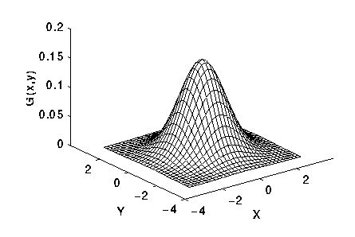
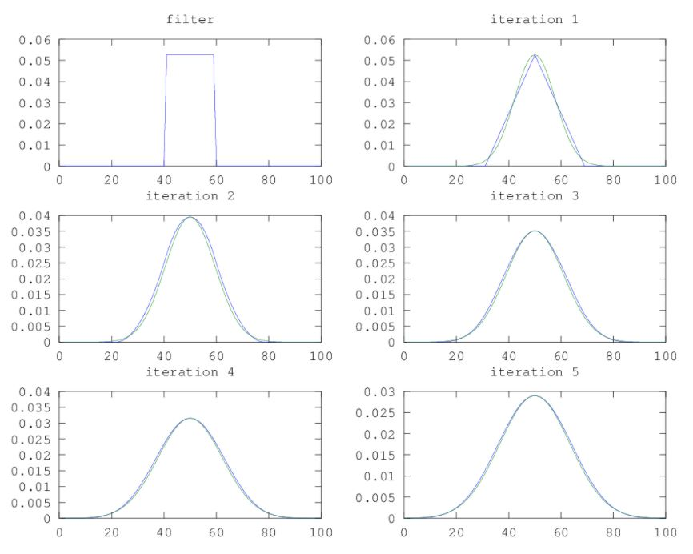
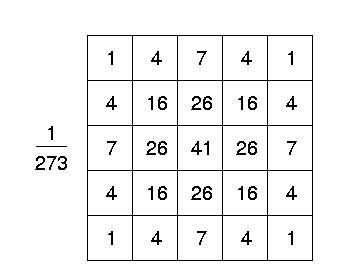

I'm an enthusiastic researcher in Image Processing and Computer Vision. Learning new theories and bringing them to practice is my hobby. My research topics are Pattern Matching, Stereo-Vision Reconstruction, and other Miscellaneous.
The Gaussian filter is a convolution operator that is used to blur images and remove detail and noise.
In 2D, the Gaussian kernel is described as \(G(x,y)=\frac{1}{2\pi{\sigma^2}}e^{-\frac{x^2+y^2}{2\sigma^2}}\)
Where \(\sigma\) is the standard deviation of the distribution.

When \(\sigma\) get larger, the value of kernel becomes smaller. And if the kernel size isn't scaled to bigger, it'll make the image darker gradually as you see Video 2 below. In order to avoid this, the kernel value should be normalized so that the sum of them is always 1.
The Gaussian filter can be optimized in several ways.
The first, in 2D an isotropic Gaussian shown above is separatable into \(x\) and \(y\) components, thus 2-D convolution can be performed by \(x\) direction first, then \(y\) direction.
The second is approximate a gaussian using a box filter aka mean filter. By performing the box filter multiple times, an approximation gaussion filter can be obtained more quickly.

The third is using an approximation Gaussian kernel. Below is an approximation of Gaussion filter with \(kernel size = 5\times{5},\sigma=1.0\).

2. Experiment
Video 1: Demo a 2D Gaussion Filter
Video 2: Demo a 2D Gaussion Filter Without Normalize Kernel